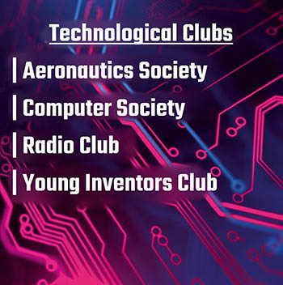
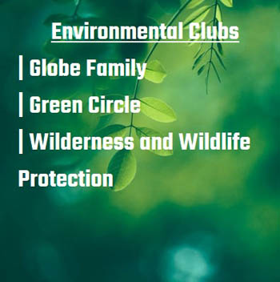

Every Club & Society at Royal College has something unique to offer to its member base, whether it be kindling their passion towards specific interests, furthering their ability to work in unity or even being a role model to peers. There are over 45 active student organizations at the College, all of which promise different invaluable lessons and experiences that have produced countless all-round characters.
The school takes great pride in the service provided to every section of society by the Clubs & Societies it offers. With 10 avenues to accommodate the wide variety of endeavours undertaken by the organizations, there is a Club or Society to drive forth the advancement of every aspect of the College and the nation.